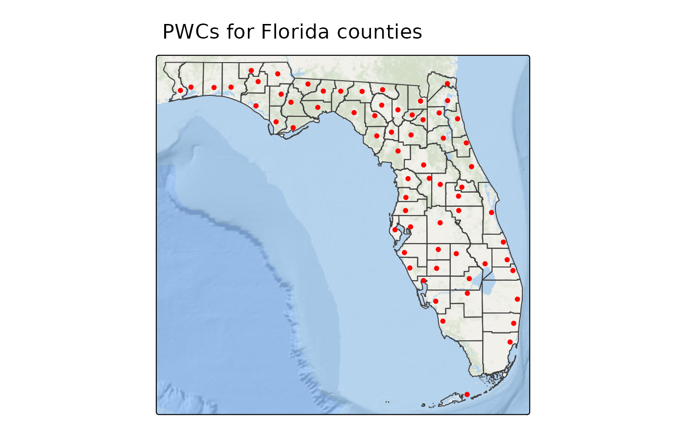
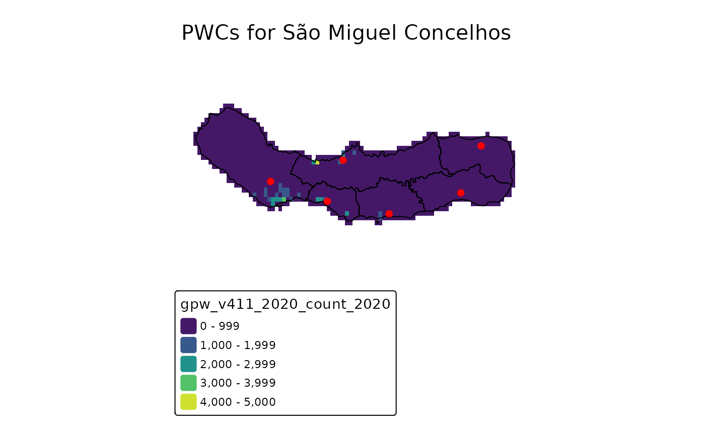

By far the most common use for centr is generating
population weighed centroids (PWCs). While it is possible to find
official data sources for PWCs (for example, the US Census publishes “Centers
of Population”), they may not always PWCs for your particular group
of interest. centr was designed to play nicely with other
packages so that you can quickly and easily create your own!
Using centr with tidycensus
For users working with United States data, tidycensus provides a seamless interface for programmatically retrieving the demographic and spatial data required to calculate PWCs. It allows you to fetch both demographic variables and geographic boundaries directly from US Census Bureau servers for immediate use in the centr package.
In the following example, we will seek to generate PWCs for the senior population (ages 65+) across Florida counties using 2016–2020 American Community Survey (ACS) data. In order to generate PWCs from Census data, you must first retrieve population estimates at a higher resolution than your target geography. In this example, we use Census tracts. The following code pulls Florida tract-level data and aggregates the specific Census variables representing males (B01001_020E through B01001_025E) and females (B01001_044E through B01001_049E) aged 65 and older:
library(tidycensus)
library(dplyr)
library(sf)
fl_acs20_65up <- get_acs(
geography = "tract",
table = "B01001",
year = 2020,
state = "FL",
output = "wide",
geometry = TRUE
) %>%
mutate(
pop_65up = rowSums(across(c(
B01001_020E:B01001_025E,
B01001_044E:B01001_049E
)))
) %>%
select(GEOID, pop_65up)Next, we will conduct pre-processing in the form of creating a county geographic identifier (the first 5 digits of the tract GEOID) and removing any empty geometries.
fl_acs20_65up_centr <- fl_acs20_65up %>%
mutate(geoid_county = substr(GEOID, 1, 5)) %>%
filter(!st_is_empty(.))From there, we can use mean_center() by specifying
group as the county identifier and weight as
the population 65 and up.
fl_acs20_65up_centr <- mean_center(
fl_acs20_65up_centr,
group = "geoid_county",
weight = "pop_65up"
)Let’s take a look at the results!
library(tmap)
library(tigris)
fl_counties <- counties(state = "FL", year = 2020, cb = TRUE)
#> | | | 0% | |== | 3% | |==== | 6% | |===== | 7% | |===== | 8% | |====== | 9% | |======= | 9% | |======= | 10% | |======== | 11% | |========= | 12% | |========== | 14% | |========== | 15% | |============ | 17% | |============ | 18% | |============= | 18% | |============= | 19% | |============== | 20% | |=============== | 21% | |=============== | 22% | |================ | 22% | |================ | 23% | |================ | 24% | |================= | 24% | |================= | 25% | |================== | 26% | |=================== | 27% | |===================== | 30% | |====================== | 31% | |====================== | 32% | |======================= | 33% | |======================== | 34% | |========================= | 35% | |========================== | 37% | |========================== | 38% | |=========================== | 38% | |============================ | 40% | |============================ | 41% | |============================= | 41% | |============================== | 42% | |============================== | 43% | |=============================== | 44% | |================================ | 46% | |================================= | 47% | |================================== | 48% | |================================== | 49% | |=================================== | 49% | |=================================== | 50% | |=================================== | 51% | |==================================== | 52% | |===================================== | 53% | |====================================== | 54% | |====================================== | 55% | |======================================= | 56% | |======================================== | 57% | |========================================= | 58% | |========================================== | 59% | |========================================== | 61% | |=========================================== | 61% | |=========================================== | 62% | |============================================ | 64% | |============================================= | 64% | |============================================== | 65% | |============================================== | 66% | |=============================================== | 68% | |================================================ | 69% | |================================================= | 70% | |================================================== | 72% | |=================================================== | 73% | |=================================================== | 74% | |==================================================== | 74% | |===================================================== | 75% | |===================================================== | 76% | |====================================================== | 77% | |====================================================== | 78% | |======================================================= | 79% | |======================================================== | 80% | |========================================================= | 81% | |========================================================= | 82% | |========================================================== | 83% | |============================================================ | 86% | |============================================================== | 88% | |=============================================================== | 90% | |================================================================ | 92% | |================================================================= | 93% | |================================================================== | 94% | |=================================================================== | 96% | |==================================================================== | 98% | |===================================================================== | 99% | |======================================================================| 100%
tm_title("PWCs for Florida counties") +
tm_shape(fl_counties) +
tm_borders() +
tm_shape(fl_acs20_65up_centr) +
tm_dots(fill = "red") +
tm_basemap("Esri.OceanBasemap")
This map is a great example of the things we can learn from PWCs. We see that elderly individuals in Florida’s coastal counties, tend to live closer to the coastline. Additionally, within the county in the bottom left (Monroe County), elderly individuals tend to live in the Florida Keys rather than the mainland which contains the Everglade National Park.
Using centr with raster data
For areas without nested geographies or available population data, there is still another way to calculate population weighted centroids: with gridded population rasters!
There are several different sources of gridded population rasters
including the Gridded Population of the World, WorldPop Estimates,
Global Human Settlement Population Grid, etc., but no matter the source,
centr makes generating population weighted centroids
easy.
In the following example, we will use example data provided by the
exactextractr package. The pop_count raster
cotains the population and elevation data from the Gridded
Population of the World cropped to the extent of São Miguel, and the
concelhos layer contains boundaries for the six
municipalities, or concelhos for the island of São Miguel.
library(terra)
pop_count <- rast(
system.file(
'sao_miguel/gpw_v411_2020_count_2020.tif',
package = 'exactextractr'
)
)
concelhos <- st_read(
system.file(
'sao_miguel/concelhos.gpkg',
package = 'exactextractr'
),
quiet = TRUE
)From here it’s just as easy as plugging into
mean_center(), setting the weight to the raster.
concelhos_centr <- mean_center(concelhos, group = "name", weight = pop_count)Let’s take a look at the results!
tm_title("PWCs for São Miguel Concelhos") +
tm_shape(pop_count) +
tm_raster(col.scale = tm_scale_intervals(values = "viridis")) +
tm_shape(concelhos) +
tm_borders(col = "black") +
tm_shape(concelhos_centr) +
tm_dots(fill = "red", lwd = 3) +
tm_layout(frame = FALSE)